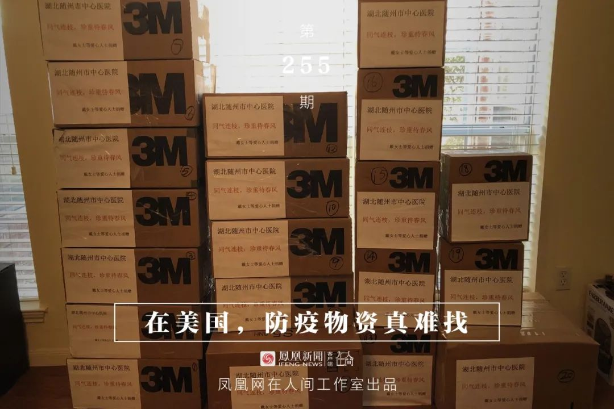

湖北物资频频告急，民间捐赠的激情与困境
原文链接 备份链接 向风暴眼输送防护物资并非易事武汉市中心医院医生发布微博求助，希望社会各界捐物资。图源：微博截图 2月12日晚，武汉中心医院的一位医生在微博发出求助。 这位身穿防护服的医生对镜头说，医用N95没有了，只能戴工业口罩，医 …


凤凰新闻客户端 凤凰网在人间工作室出品
打开凤凰新闻客户端，搜索「在人间」并关注
我八十年代从北京来美国留学，当过兵，参加过海湾战争，如今在美国定居30多年了，现在德州开猎场。德州是美国本土最大的州，有很多大的农场，这儿的法律、制度特别适合做狩猎生意，这是一个传统生意。1996年，我和朋友合股买的第一个猎场是1942年开业的，美国人、加拿大人、中国人都到这里来狩猎。
我们公司有一个网站，客户看了会先预约交50%的定金。国内春节前大概不到一个礼拜，就有国内客户跟我说，Marshall我们可能不去了，能不能把定金给我们退回来？他们说是因为新冠肺炎。
我赶紧把钱给他退了。后来美国政府宣布隔离从中国回来的人，停止给中国人办美国签证。我想，那3月份要来的人，也赶紧给退了吧。等时间过了，再做生意。
因为我会中文，一般中国顾客都是我接，打猎之前，我们要对顾客进行枪械训练，为了他们的安全，也为了我们工作人员的安全。
现在他们不来，我就闲着没事儿了。我想，反正有时间，就看看国内需要什么。我认识不少美国华人，有聊天认识的，在教堂认识的，也有一起打羽毛球的。我跟他们说了想法，有人觉得OK，也参与进来。我们组织了一个几十人的群。这样就搞起来了。
大部分人觉得我有时间，就说，我们把钱都给你，我说国内不缺钱，给钱也不可能战胜病毒。他要的是东西，咱们给他找这东西去。

物资难找，真难找。
正好我以前投资过抗衰老中心，算是医疗诊所。我就问以前的供应商，谁有口罩卖。一问，基本没货，或者有货也不能全卖你。因为美国人自己也得留着，以防需要。突然感觉这东西挺紧张的。
我一个人找口罩也费劲，就在群里发了医疗批发方面的公司网站和电话号码，大家一起联系，有时间就跑一下。
一开始大家都挺热情，都打电话找，但一般打几个电话就气馁了，感觉没戏，就不弄了。最后就剩我们夫妻俩弄。
抢购这事儿真不可思议。当时中国留学生都在找货。从20号左右开始，基本一个星期全扫光了。国内在过春节，这边还在扫货。
零售商店、普通超市和药店很难买到医用口罩，因为平时卖不出去。医院里也没有卖口罩的，医用口罩得找给医院做批发的渠道商。要找大批量的，医疗界的渠道商和批发商是我们的主要目标。
但那时候不能相信网页，下单后要打电话确认。你们真能给我运过来吗？真有那么多吗？99%的可能性是NO，我们没有，但是我们网页没有更新，对不起，卖完了。或者说1万个可以有，但是6个月以后。
美国历史上就没有过这样抢口罩的事儿。美国人没有戴口罩的习惯，我这么多年一个也没看见过。当时美国查出几例新冠肺炎患者，但没有恐慌，美国CDC说，我们每年死于普通流感的人就六七千人。没有人去买口罩防护，该看橄榄球决赛的就去看。
很多机构找我帮忙采购口罩。我当时联系到一批口罩。有一个国内公司给政府采购，说，我们给你10%的定金，等货到了再给你90%。我说这是卖方市场，你得全款打过来。后来晚了，那边说没了。
我的客户很多都是老板，也想捐献物资，让我帮忙买。有一次，我在网上买了6箱防护服，却只收到一箱。对方说全美4个州都有我们的公司，你买的防护服从不同州运过来，你得等。最后收到4箱。那边说对不起，另外两箱已经卖给别人了，钱给你退回去吧。
防护服比口罩还要难找。当年埃博拉病毒，也需要用非常高级的防护服。这个防护服的制造公司就在我们达拉斯。我就问他们，埃博拉那个（防护服）还有吗？他说有。我说这个能防新冠病毒吗？他说没有任何问题。我说你再查一查？他说行，明天我跟你说。
第二天我又打了一个电话。他说右眼眼膜受伤了，得去医院，回来要下午3点多。我说那你先把眼睛看好，出来之后给我打一个电话，那300箱我全买了。但三个小时后，等他回来300箱全没了。
价格也在涨。3M口罩在美国平时是七八十美分一个，贵点的2块多美元一个。疫情期间，大概每个3美元、4美元。一线使用的防护服价格从10美金左右涨到了15美金，2月5日开始，又涨到了45美金一件。
第一个礼拜抢购的时候，美国人还没琢磨过味来，网页都没来得及更新。但不到一个星期，亚马逊上口罩的价钱，立刻从10来块钱一包涨到100块钱。
消息每小时都在变，眼瞧一天比一天难找。
一开始，“打老虎群”里的企业家捐赠了一批费用，我们负责采购、运输、通关、做材料、对接医院等所有事宜。
通过联系渠道商，好不容易在网上定到了一些货，就等他们运过来。一般来说，货寄到我手上要3到8个工作日。
彼时，我们在网上看到随州市中心医院的求助消息，物资告急，医院就剩两三件防护服了。武汉集中了很多物资，但是发不到湖北这些小城市，看了让人掉眼泪。
刚好有个朋友的弟弟在那家医院当医生，确认信息真实之后，我们就准备了11箱物资。
1月26、27日，第一批货到了我们手上。刚好此时，达拉斯有家快递公司发出了免费运送捐赠物资到前线的信息。

■ Marshall做志愿者搬运货物。
我们也去联系了这家快递公司，但是没人把货打包从快递公司运到集散仓库。快递公司问我们能不能帮忙。那天下雨，我们需要把这批物资从北达拉斯运到西南边的集散仓库，大约50分钟的路程。去快递公司一看，两个工作人员爱答不理，捐赠的东西都扔在地下，上面写着“捐给武昌医院”“武汉加油”之类的字。我们赶紧打包，希望赶上2月6日洛杉矶飞中国的航班，但还是错过了，又等了两天才运走。
但由于物流打包出现错误，货被打散，又重新组装，不全，无法报关。我通过报关公司，发现4箱还在洛杉矶，7箱已经到了上海海关。报关单跟实际到的货物不对应，不能出关。
辗转多日之后，11箱物资有10箱已到达随州市中心医院，另外1箱找不到了。
由于大家一起捐，很容易出现物资混乱的情况，后来，我们就决定单独捐赠。很多朋友给了帮助，有的华人捐助仓储设备，有的捐赠运输费用。

■ 找朋友带回国寄给随州中心医院的防护服。
2月8日，我一块儿打羽毛球的朋友，说有朋友明天要回国，可以帮我带物资。我晚上就把防护服装进行李箱，一共75件防护服。
他们有三个人，行李特别多。飞机是早上7点起飞，我5点到他们家，把他们送到机场。心想该收多少运费，我用信用卡付。但没想到，他们特意给我留出了两个行李位，我那两个大箱子基本没花运费。货运到广州后，东莞的朋友开车来接货，直接从广州快递寄到随州市中心医院了。
1月底，中国有的航空公司开通了绿色通道，为国外捐赠免费运输物资。
一开始，绿色通道不允许定向捐赠。所有物资只能捐到武汉，由武汉红十字总会调配。但我们还是想做定向捐赠。
那时我们处于买不到医用口罩的阶段。华侨群里，大家都在一起找货，有的人天天去店里转悠，看到有N95口罩，就买。但是买来的这些口罩有的是不符合医用标准的。因为在美国，零售店里卖的N95口罩一般是给喷漆工、搬运工、泥土工等人用的。
华人捐赠物品放在我这边，一天可能也能收到5盒8盒10盒的，攒够了才值得去运一次。我们不想浪费这些口罩。
一个朋友把武汉市江夏区疫情防控指挥中心的一位处长介绍给了我，刚好这些口罩可以给他们用。
我们自费运输，但是数量太多会被怀疑倒卖，容易被征用。我就把口罩分开寄到国内不同的地方，让朋友签收完再寄给江夏区。这种方式并不有效，第一太贵，第二很慢。
每个箱子外面我都拿黑笔写了中国字。邮局的人一看是中文，问，你是不是寄到中国的？我说是。她又说，第一你只能寄国际快递，第二我们不保证7到10天可以到达，现在没有任何保证会到达中国，有可能是一个月以后，也可能是半年以后。第三，东西丢了之后，没有任何赔偿。你还想要寄吗？
我当天没有别的选择，我只能说愿意承担风险，寄。我最后通过顺丰和邮政两家快递发出去的。目前，已显示到达国内。

后来，政策又变了，走国家绿色通道航空也可以定向捐赠。湖北省慈善总会说如果有医院的接收证明，就不需要三证。三证是指工厂生产资质证，产品生产证，还有一个是测试证，就是经过第三方官方机构的测试证。

■ 随州市中心医院接收函。
2月中旬，我们想继续给随州市中心医院捐赠，该医院也给我们开了“同意接收函”。
我们又从美国当地渠道商那里找货，一开始联系的渠道商没有货，但听到我们是要捐赠到中国，就把竞争对手的电话号码给我们了。我们最后买到65件防护服和2340个3M口罩。这批货里的钱是由很多人捐赠的，有学生、老师、普通职员等，我们自己也捐了，一共2万美金。
2月18日，我们联系到休士顿大使馆葛处长。我们给他们写申请，24小时内，他们就给我们盖好函，开好介绍信。接着，又立刻给我们申请舱位。
这批货可以直接走国家绿色通道，但是这段绿色通道仅指从美国海关到上海海关这段路，到了上海海关后，又有两条途径寄到武汉。一种是向国家申请免费运输到武汉，货会送到湖北省慈善总会和武汉红十字会，再由湖北省慈善总会安排志愿者送到随州市中心医院（要按顺序排队），或者随州市中心医院自己开车来取物资。另一种是我们自费请货代公司从上海海关直接拉到随州市中心医院，费用比较贵。
我们想，就差最后一口气了，还是自己花钱吧。2月22日我们把货送上国航了，目前已到随州市区，尚未到达医院。

■ 当地时间2月22日，从澳大利亚采购到的物资在墨尔本机场柜台前准备出发。
这期间我们还从澳大利亚采购到货，捐了425件防护服给华中科技大学附属天佑医院。这批货我们主要负责所有采购和对接，由“打老虎群”里的企业家们捐赠。
2月12日采购到位，共30箱货物，2月21日，我们从南航申请到810kg免费舱位，然后找到一个朋友直接人肉将货从澳大利亚带到了广州。
当时也经历了许多波折，到了广州海关，海关要求我们提供湖北省慈善总会盖章，又要提供武汉海关的通知，这是海关需要走的流程。我们连夜联系湖北省慈善总会，从22日晚上6点弄到23日早上7点，才把货从广州海关搬出来，再转送去武汉。目前，货已经收到了。
除了这些，我们还帮其他朋友对接捐赠了常州市钟楼区永红街道社区卫生服务中心、湖北中医药大学方舱医院等地方。
目前粗略统计，我们一共经手捐出去近1500件防护服，3000多个口罩，100个护目镜，基本都是送到湖北的。
由于我们跟国内有14个小时时差，为了配合国内的时间，我们基本每天凌晨5点多才睡觉，每天都在忙着找货，对接送货。

其实在整个捐赠过程中，我们的角色是有转变的。
一开始，国内药企找我们采购，我们是供货商。后来有各种各样的中国基金会、慈善总会、企业老板来找我们采购捐赠。接下来，医院也来找我们。我们就变成了“组局人”，把有需求的医院信息公布出来，我们的朋友捐款，我们出力。
这期间，我们全世界找货，除了联系货源、对接寄送外，我们自己也在进行个人捐赠。疫情期间密集采购，也让我接触到各种奇怪的人和事。
那时是捐赠初期，我们在找货。有一次我们找到一个迪拜的货源，并找了当地一个朋友，让他帮忙去看货。
我打电话给迪拜的朋友时，他刚刚被房东赶出来，因为当天，迪拜有4例中国人被确诊患有新型冠状肺炎。房东让他到别的地方隔离14天再回他的房子。
他所有的行李，护照，全在房间里。夜里12点之后，他不知道怎么弄，就在台阶上坐了好几个小时。最后有好心的朋友愿意帮他忙，让他去住了一晚上。
第二天，他往返坐了5个小时巴士到达那个地方，帮我看货。去了之后，发现报价翻倍。一开始十几美金一件防护服，翻成三十美金。他们强调这是医用的，但我们把它的标准跟复星和国药的采购标准对比后，发现并没有通过血液渗透测试，也就是不符合标准。
我们是非常注重物资标准的。一般来说，找到一批货时，我们要先检测标准，要有人看现货、试穿，确认有没有密封条，生产日期，包装、尺寸是怎样的，完全了解到位后，再告诉医院要不要用。但是很多代购、导游，什么防护服都卖给中国。
2月中旬是最难找货的阶段。那时ebay上有很多2003年到2009年之间生产的口罩出售。我们从语言上可以分辨出哪些是白人写的，哪些是中国人写的。白人就直接说，我们是过期口罩，爱买不买。但是中国人就说是医用口罩，放着2003年老款的照片。我看到每一分每一秒都有很多人买，觉得很震惊。
发国难财，各种各样的人都出来了。我遇到两件奇葩的事。第一件事是，有个人在微博联系我，说是代表国内一家药企采购。我就帮他对接了以色列厂家的物资，后来，我以色列的朋友说，对方找他要每件防护服5美金的回扣，否则就不买。还有个人找到我，说他们有一批南非的货，但是我调查后，发现货物是河南生产的。
尽管有这么多让人意想不到的事发生，我们还是要继续捐赠。其实里边没有太多壮举，就是一些不得不做的琐事。
我们在境外给予国内一点儿帮助，也是告诉大家，全球的中国人都在全力以赴度过难关。
更多疫情故事，请点击左下角「阅读原文」。


新型肺炎疫情牵动人心，
《在人间》现面向全国网友征稿：
（一） 疫区影像日记
如果你身处疫区
请你用照片（视频）和文字记录
你所听闻和见到的一切
照片不少于3张
文字不少于300字
投稿方式：微信联系人间君（zairenjianliving）
（二）抗击疫情真实故事
无论你是一线医护人员、志愿者、
确诊或疑似患者及家属、已治愈出院人士等等，
如果希望讲述疫情相关经历，
请微信联系人间君（zairenjianliving）

文章已于修改
原文链接 备份链接 向风暴眼输送防护物资并非易事武汉市中心医院医生发布微博求助，希望社会各界捐物资。图源：微博截图 2月12日晚，武汉中心医院的一位医生在微博发出求助。 这位身穿防护服的医生对镜头说，医用N95没有了，只能戴工业口罩，医 …
原文链接 备份链接 图片来源：海洛创意 记者：梁宙 “ 武汉一线医护人员物资仍有较大缺口，湖北省卫生计生宣传教育中心通过官方微信公号“健康湖北”发布了武汉各大医院的接受社会捐赠公告。其中，有的医院求援公告已更新至第五版。 ” 武汉一线医护 …
原文链接 备份链接 【财新网】（记者 张子竹 实习记者 黄雨馨 陈丽金）“我们的N95口罩每天消耗5500多个，防护服4000多套。由于消耗量很大，而且目前没有稳定的供应来源，所以现在这方面（医用物资）十分紧缺。”2月6日，湖北省随州市 …
原文链接 备份链接 作者 | 江山 编辑 | 张国 2月5日，中国青年报·中国青年网记者看到的一份湖北省广水市二医院紧缺物资需求清单显示，该院医用防护面罩、医用护目镜、防护鞋套等许多物品的库存数量都是“0”。广水市是随州市下辖的县级市之 …
原文链接 备份链接 海内外源源不断捐赠武汉，各大医院仍全面告急。被指定接收捐赠物资的主要机构湖北省与武汉市红十字会系统成为众矢之的，他们原本应该为重大突发事件做好准备，却一开始就因专业能力不足遭遇了信任危机。 本刊记者探访了武汉红十字会位 …